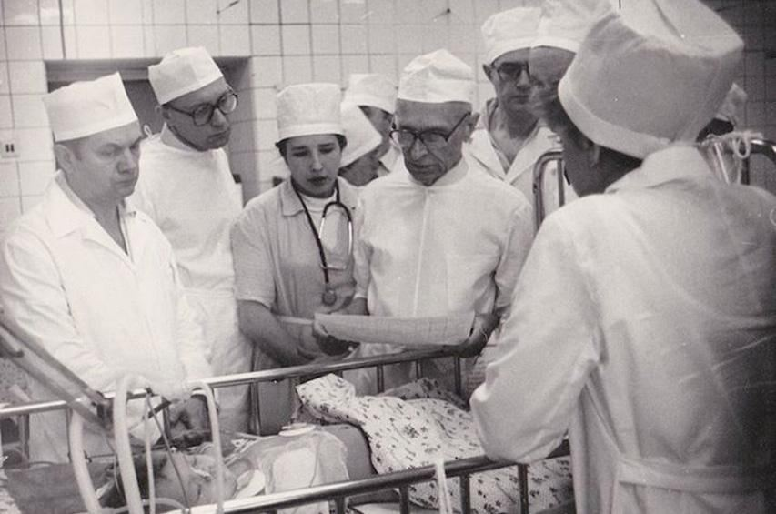

Doctor of Science who saved a thousands lives

Dr. Nikolai Mikhailovich Amosov, fourth from left, trains doctors in Ukraine how to treat patients with heart disease.
Dr. Nikolai Mikhailovich Amosov, fourth from left, trains doctors in Ukraine how to treat patients with heart disease.
Here's a time line of Dr. Amosov life:
- 1913 - Born in Olkhovo, Novgorod Governorate, Russian Empire
- 1932 - Graduated from Cherepovets Mechanical College
- 1934 - married Galina Sobolev and began to study at the Correspondence Industrial Institute. In the same year mother died
- 1935 - Enrolled in the Arkhangelsk Medical Institute
- 1939 - Graduated from the Arkhangelsk Medical Institute
- 1940 - Graduated with distinction from the All-Union Correspondence Industrial Institute
- 1944 - concluded the second marriage - with the nurse Lydia Vasilyevna Denisenko
- 1952 - moved to Ukraine in Kiev
- 1953 - defended his doctoral dissertation and headed the department at the Kiev Medical Institute
- 1960 - headed the department of biocybernetics of the Institute of Cybernetics of the Academy of Sciences of Ukraine
- 1961 -Was awarded Lenin Prize for the work of lung surgery
- 1965 - For the first time in the world he developed and introduced into practice the anti-thrombotic heart valves prosthesis
- 1968 - Appointed to the post of deputy director for science of the Kiev Scientific Research Institute of Tuberculosis and Thoracic Surgery
- 1983 - Director of the Institute of Cardiovascular Surgery
- 2002 - Died of a heart attack, buried in the Baykovoye cemetery in Kiev